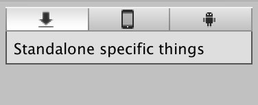

EditorGUILayout.EndBuildTargetSelectionGrouping
public static void EndBuildTargetSelectionGrouping();
Description 描述
Close a group started with BeginBuildTargetSelectionGrouping.
See Also: EditorGUILayout.BeginBuildTargetSelectionGrouping.

Build Target Selection Group
using UnityEditor;
public class BuildTargetGroupExample : EditorWindow { [MenuItem("Examples/Begin-End BuildTarget Grouping")] static void Init() { BuildTargetGroupExample window = (BuildTargetGroupExample)EditorWindow.GetWindow(typeof(BuildTargetGroupExample), true, "My Custom Editor Window"); window.Show(); }
void OnGUI() { BuildTargetGroup selectedBuildTargetGroup = EditorGUILayout.BeginBuildTargetSelectionGrouping(); if (selectedBuildTargetGroup == BuildTargetGroup.Android) { EditorGUILayout.LabelField("Android specific things"); }
if (selectedBuildTargetGroup == BuildTargetGroup.Standalone) { EditorGUILayout.LabelField("Standalone specific things"); }
EditorGUILayout.EndBuildTargetSelectionGrouping(); } }